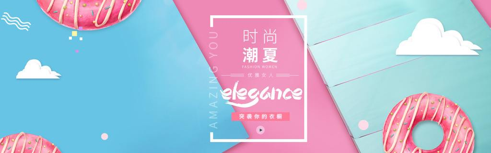

!<!DOCTYPE html>
<html>
<head>
	<title>轮播图-无缝轮播</title>
    <link rel="stylesheet" type="text/css" href="./common/common.css">
</head>
<body>
	<div class="box">
        <ul class="banner-box img">
            <li></li>
            <li></li>
            <li></li>
            <li></li>
            <li></li>
        </ul>
        <ul class="circle"></ul>
        <ul class="arrow">
            <li class="left"><</li>
            <li class="right">></li>
        </ul>
    </div>
    <script>
        var box = document.querySelector('.box');   		//轮播图容器
        var bannerBox = box.querySelector('.banner-box'); 	//图片容器
        var circle = box.querySelector('.circle');  		//小圆点容器
        var arrow = box.querySelector('.arrow');			//箭头容器
        var leftArrow = arrow.querySelector('.left');		//左箭头
        var rightArrow = arrow.querySelector('.right')		//右箭头
        var index = 0;							    		//当前显示的图片的索引

        //1、在最后一幅图后面添加第一幅图
        var addImg = bannerBox.children[0].cloneNode(true);
        bannerBox.appendChild(addImg);

        //2、动态添加轮播点，同时点亮第一个
        var circles = bannerBox.children;						//小圆点的个数即所有图片的个数集合
        for(var i = 1; i < circles.length; i++){
            var circleLi = document.createElement("li");
            circleLi.innerHTML = i;
            circle.appendChild(circleLi);
        }

        var points = circle.children;
        light();

        function light(){
            for(var i = 0;i < points.length; i++){
                points[i].className = "";
                if (index > 4){ // 大于4时第一个点亮
                    points[0].className = "current";
                } else {
                    points[index].className = "current";
                }
            }
        }
        //3、点击小圆点，ul移动到相应的图片,同时点亮小圆点
        for(var j = 0; j < points.length; j++){
            points[j].index = j;
            points[j].onclick = function(){
                index = this.index;
                animate(bannerBox, -index * box.offsetWidth);
                light();
            }
        }

        //4、左右箭头切换图片
      rightArrow.onclick = autoplay;

      function autoplay(){
        index++;
        if(index > circles.length - 1){
            bannerBox.style.left = 0;
            index = 1;
        }
        animate(bannerBox, -index * box.offsetWidth);
        light();
      }

      // 左箭头
      leftArrow.onclick = function(){
         index--;
         if (index < 0){
            bannerBox.style.left = -(circles.length-1) * box.offsetWidth + "px";
            index = circles.length - 2;
         }
         animate(bannerBox, -index * box.offsetWidth);
         light();
      }
        //5、添加自动轮播功能
       box.timer = setInterval(autoplay, 2000);
       box.onmouseover = function(){
        clearInterval(box.timer);
       }
       box.onmouseout = function(){
        clearInterval(box.timer);
        box.timer = setInterval(autoplay,2000);
       }


        function animate(obj,target){
            clearInterval(obj.timer);
            obj.timer = setInterval( function(){
                var speed = (obj.offsetLeft > target ? -20 : 20);
                if (Math.abs(obj.offsetLeft - target) > 20){
                    obj.style.left = obj.offsetLeft + speed + "px";
                } else {
                    obj.style.left = target + "px";
                }
            },20)
        }
    </script>
</body>
</html>